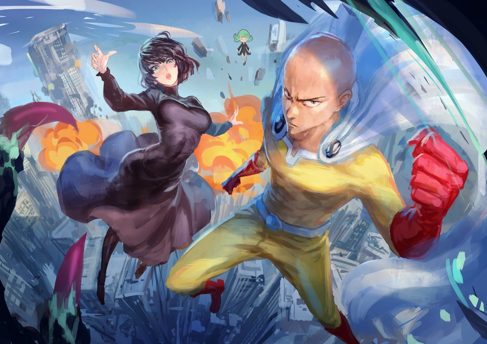

В отличие от мультфильмов других стран, предназначенных в основном для просмотра детьми, бо́льшая часть выпускаемого аниме рассчитана на подростковую и взрослую аудитории, и во многом за счёт этого имеет высокую популярность в мире. Аниме отличается характерной манерой отрисовки персонажей и фонов.История аниме берёт начало в XX веке, когда японские кинорежиссёры начинают первые эксперименты с техниками мультипликации, изобретёнными на Западе. Старейшая из известных сохранившихся японских анимаций — «Katsudo Shashin» длится всего 3 секунды. Одним из самых первых аниме стал продемонстрированный в 1917 году двухминутный комедийный фильм «Namakura Gatana», в котором самурай собирается испытать свой новый меч, но терпит поражение от горожанина. Первопроходцами в области японской мультипликации стали Симокава Отэн, Дзюнъити Коти и Сэитаро Китаяма. Одним из наиболее популярных и доступных методов на тот момент была техника вырезной анимации, её применяли такие аниматоры, как Санаэ Ямамото, Ясудзи Мурата и Ноборо Офудзи. Позднее распространилась также техника аппликационной анимации. Успеха в развитии техники анимации добились и другие мультипликаторы, такие как Кэндзо Масаока и Мицуё Сэ, использовавшие, в частности, анимационные фильмы в образовательных и пропагандистских целях. Первым звуковым аниме стал снятый Масаокой в 1933 году короткометражный фильм Chikara to Onna no Yo no Naka. К 1940 году начали образовываться организации мультипликаторов и художников, такие как Shin Mangaha Shudan и Shin Nippon Mangaka. В то время аниме активно использовалось в качестве средства государственной пропаганды. Одним из первых полнометражных анимационных фильмов стал снятый Мицуё Сэо в 1945 году «Momotarou: Umi no Shinpei»; спонсорскую поддержку при создании фильма оказал Императорский флот Японии.
История аниме берёт начало в XX веке, когда японские кинорежиссёры начинают первые эксперименты с техниками мультипликации, изобретёнными на Западе. Старейшая из известных сохранившихся японских анимаций — «Katsudo Shashin» длится всего 3 секунды. Одним из самых первых аниме стал продемонстрированный в 1917 году двухминутный комедийный фильм «Namakura Gatana», в котором самурай собирается испытать свой новый меч, но терпит поражение от горожанина.
В японском языке полностью отсутствует свойственное русскому силовое ударение, поэтому японские слова, заимствованные в русский язык, обычно получают ударение в зависимости от традиций произношения слов на русском языке. В русском слове «аниме» зафиксировано ударение на последнем слоге.Основоположником традиций современного аниме стал Осаму Тэдзука — он заложил основы того, что позднее преобразовалось в современные аниме-сериалы. Например, Тэдзука заимствовал у Диснея и развил манеру использования больших глаз персонажей для передачи эмоций; именно под его руководством возникали первые произведения, которые можно отнести к ранним аниме. Первой работой Тэдзуки стала манга «Shin Takarajima». Впоследствии он создал мангу под названием Tetsuwan Atomu (Astro Boy), которая и принесла ему успех. К 1970-м годам популярность манги заметно возросла, многие произведения были анимированы. Тэдзуку благодаря его работам часто называли «легендой» и «богом манги и аниме».
За почти вековую историю аниме прошло долгий путь развития от первых экспериментов в анимации, фильмов Тэдзуки до нынешней огромной популярности по всему миру.
С годами сюжеты аниме, первоначально рассчитанного на детей, становились всё сложнее, обсуждаемые проблемы всё серьёзней.Появились аниме-сериалы, рассчитанные на подростковую аудиторию — юношей и девушек старше четырнадцати лет. Эти сериалы нашли поклонников и среди взрослых, в редких случаях вплоть до преклонных лет. В своём развитии аниме немного отставало от манги, которая зародилась на несколько лет раньше и к тому времени уже завоевала популярность среди всех кругов населения Японии.
Вершиной аниме принято считать работы режиссёра Хаяо Миядзаки. Его «Унесённые призраками» стали первым и единственным анимационным фильмом, получившим премию Берлинского кинофестиваля, как «Лучший фильм», а не «Лучший мультфильм».
В русском языке слово «аниме» имеет средний род, никогда не склоняется. Слово иногда используется как первая часть составных слов, таких как «аниме-режиссёр» или «аниме-сериал». В разговорной речи встречаются образованные от «аниме» слова «анимешник», «анимешный» и т. п.
Дитя погоды
Он ведёт в городе уединённую жизнь, однако ему удаётся устроиться писателем в агентство, продающее жёлтой прессе статьи о сверхъестественном. С момента его приезда в столицу изо дня в день идёт дождь. В суете делового города он встречает девушку по имени Хина Амано. В силу определённых обстоятельств Хина живёт вместе со своим младшим братом, при этом она жизнерадостная и сильная. Помимо прочего, она обладает одной примечательной способностью: она умеет останавливать дождь и разгонять тучи.
человек-бензопила

Действие истории разворачивается в мире, где дьяволы рождаются из человеческих страхов. Однако люди, называемые Охотниками на дьяволов , специализируются на охоте на них и найме на работу. События происходят в 1997 году, в альтернативной временной шкале, где все еще существует Советский Союз, и многие события, такие как Холокост, СПИД и ядерное оружие, были стерты из истории из-за употребления соответствующих Дьяволов Дьяволом-Бензопилой, и только четыре могущественных Дьявола, известных как Всадники (Контроль, Война, Голод и Смерть), помнят об этих событиях. Люди могут заключать контракты с дьяволами посредством жертвоприношения, что позволяет им использовать силу Дьявола. Дьяволы также могут стать извергами, завладев человеческим мертвым телом. Когда Дьявола убивают на Земле, он вновь появляется в Аду, а если его убивают в Аду, он перевоплощается в новом теле на Земле.
Киберпанк: Бегущие по краю
Мать Дэвида Мартинеса еле сводит концы с концами, но пытается сделать всё возможное, чтобы сын учился в элитной академии и получил хорошее образование. Когда, попав в уличную перестрелку и автоаварию, женщина из-за плохой страховки умирает в больнице, Дэвид ставит себе экспериментальный имплантат, дающий своему обладателю повышенные боевые характеристики, и становится наёмником.
Класс убийц
Классу 3Е в школе отведена роль изгоев, остальные ученики и учителя подвергают класс 3Е травле. В класс 3Е отправляют отстающих учеников и хулиганов из других классов. Данная система внедрена директором, цель системы — заставить остальных учеников учиться на отлично под страхом перевода в класс 3Е.
Коро устанавливает в классе дружескую атмосферу, занимается индивидуально с каждым учеником и помогает избавиться от комплексов и неуверенности в себе. В результате ученики класса 3Е сдают контрольные на отлично. Параллельно представитель правительства (устроен в класс физруком) готовит из учеников класса 3Е профессиональных убийц. Ученики периодически пытаются убить Коро, накапливая опыт в ходе неудачных попыток. Из-за недостаточного прогресса учеников физрука заменяют новым (Такаока-сэнсэй). Такаока пытается заставить детей выполнять тяжелейшие тренировки, в ходе которых слабейшие погибнут, но сильнейшие станут способными уничтожить Коро. Ученики дают отпор, и Такаоку убирают из школы.
Ванпанчмен

Главный герой — Сайтама, совершающий героические поступки ради собственного развлечения. Он с детства мечтал стать супергероем. Повзрослев и впервые сразившись с монстром, он начал свои тренировки, которые, по его словам, довели его до того, что ныне он может одолеть любого соперника одним ударом. Несмотря на свои подвиги, Сайтама не афишировал их и долгое время оставался неизвестным обществу.Так получается, что большинство героев, что знакомятся с Сайтамой, смотрят на него «свысока», не веря в то, что он на самом деле он сильнее любого Героя Ассоциации, но те, кто узнают его ближе, начинают его уважать и проситься в его ученики. Постепенно имя Сайтамы обретает некую известность, однако общество по-прежнему отказывается признавать его заслуги и даже подвергает героя критике за уничтоженные в ходе битв городские строения.После атаки инопланетян, корабль которых был уничтожен Сайтамой, Ассоциация Героев получила дополнительное финансирование и расширила собственное влияние. Монстры, недовольные усилением Ассоциации Героев, создали собственную Ассоциацию Монстров , которая начала организованную борьбу с героями.
Ходячий замок
Спасённая этим голубоглазым юношей от приставаний двух военных, она влюбляется в него. Однако волнующая прогулка с ним обходится юной шляпнице её красотой и молодостью.
Вечером, в день встречи Софи с Хаулом, в доме Софи появляется ревнивая Ведьма Пустоши, которая превращает девушку в старуху. Это событие заставляет Софи покинуть родной дом и в отчаянии отправиться в Дикую Пустошь, которая пользуется дурной славой, чтобы снять с себя проклятие. По дороге ей попадается огородное пугало — Пугало-Репка, которое дарит Софи трость и помогает попасть в странное сооружение — замок Хаула. Бабушка Софи, не спрашивая разрешения хозяина, сама себя назначает уборщицей этого странного гигантского мобильного дома на стальных «курьих ножках». Со временем она обретает в замке семью, хоть и немного странную. В замке живут: огненный демон — Кальцифер, ученик Хаула — Маркл, а также сам Хаул — могущественный юный волшебник и хозяин замка.
Мэри и ведьмин цветок
Мэри, летом скучающая у двоюродной бабушки Шарлотты в деревне, обнаруживает в лесу редкий и цветущий лишь раз в семь лет цветок ночной полёт. Но цветок этот некогда был похищен из Страны ведьм, и с его помощью Мэри обретает способность летать на метле, которая уносит её в Эндор — школу ведьм — где директриса мадам Мамблчук принимает её за новую (и многообещающую) ученицу.
Однажды Тиб и Гиб, коты Питера, приводят Мэри к таинственным светящимся цветкам. Зеведей, садовник, опознаёт сорт цветов как «Ночной полёт»; легенда гласит, что цветок обладает ведьмовской магической силой. На следующий день Гиб исчезает, и Мэри идёт за Тибом, чтобы искать Гиба. Тиб приводит её к метле, торчащей из корней дерева.
Тетрадь смерти
Главный герой аниме, Лайт Ягами, является лучшим школьником Японии и сыном полицейского. Однажды богу смерти по имени Рюк стало скучно, поэтому он решил бросить одну из своих тетрадей смерти в мир людей. По дороге из школы Лайт находит лежащую на земле чёрную тетрадь и решает проверить её работоспособность. Придя домой, он в соответствии с правилами вписал в тетрадь имя преступника, которого в то время показывали по телевидению. На удивление Лайта, преступник действительно умер от сердечного приступа через сорок секунд. Удостоверившись в работоспособности тетради смерти, он решает построить новый мир, где будут жить только добрые и ответственные люди, лишая жизни всех преступников, о которых упоминают средства массовой информации.